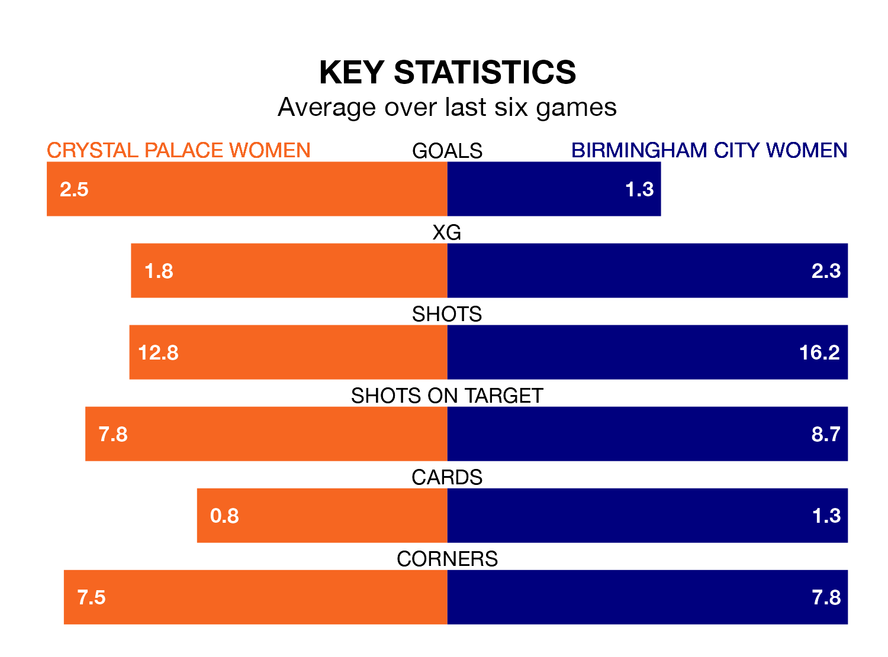

Sunday's early match between Crystal Palace Women and Birmingham City Women promises to be one for the neutrals, as two of the FA Women's Championship's most free-scoring sides go head-to-head.
Ahead of the game at the VBS Community Stadium, Crystal Palace and the Blues sit top and third in the goal-scoring charts, with 52 and 32 goals respectively.
Midfielder Elise Hughes leads the way for the home side, having bagged 15 goals in their 19 games to date.
And Charlotte Devlin, Libby Smith and Lily Agg have been the main men in the opponents' penalty box for Birmingham City, with four goals each.
Crystal Palace are second in the table after 19 games, of which they have won 12 and drawn three, earning 39 points.
Birmingham City are three places behind the home team in fifth, with 10 wins and three draws putting them on 33 points.
With Lucy Thomas between the sticks, the Blues can rely on one of the league's safest pair of hands. She has kept eight clean sheets in her 19 appearances this season, and only one other 'keeper – Sunderland Women's Claudia Moan – has been able to prevent the opposition scoring on more occasions in the FA Women's Championship.
In Crystal Palace's net, Demi Lambourne has five clean sheets in 12 games. She has conceded a goal every 96 minutes, 30% more often than the 122 minutes between goals for Thomas.
Crystal Palace are in fantastic form in the FA Women's Championship, with five wins and one loss from their last six games.
With two wins and a draw over that period, the visitors' form is much worse – they have taken seven points from 18, compared to the hosts' 15.
In the last three years, Crystal Palace and Birmingham City have played each other on three occasions. Crystal Palace won one of them and Birmingham City the other.
Their last meeting was on September 3, when Crystal Palace won 2-1 away.
Crystal Palace's last match was on March 31, a 5-1 win against Durham Women, with Annabel Blanchard (two), Hughes, Molly Sharpe and Shanade Hopcroft getting the goals for Crystal Palace.
Birmingham City lost 3-1 against Charlton Athletic Women last time out, also on March 31, with Lucy Quinn on the scoresheet.
Updated: 11:20 (UTC), 09/04/24